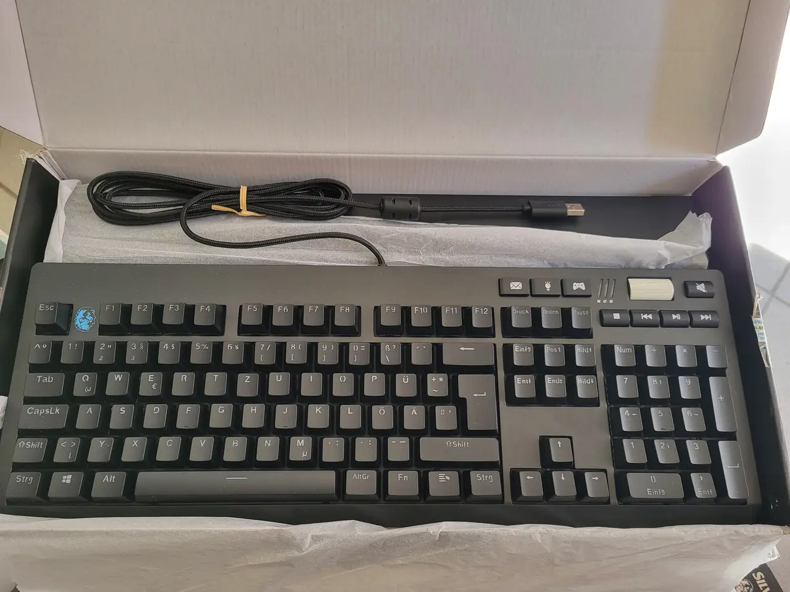

Які бувають клавіатури за типом механізму?
-
Механічні клавіатури
Ці клавіатури використовують фізичні перемикачі під кожною клавішею. Існують різні типи перемикачів: Лінійні (Linear) натискаються плавно без додаткового опору (Cherry MX Red). Популярні серед геймерів; Тактильні (Tactile): мають відчутну точку активації (Cherry MX Brown), підходять для друку; Клікаючі (Clicky): видають чіткий звук і мають тактильний відгук (Cherry MX Blue), дуже специфічні.
Де використовуються: геймінг, програмування, набір тексту.
Більше про перемикачі
-
Напівмеханічні клавіатури
Напівмеханічні клавіатури зазвичай мають мембранну основу, але додатково оснащені елементами, які імітують відчуття механічних перемикачів. Основні елементи: Мембранний шар, Механічні компоненти, Покращені ковпачки клавіш (keycaps).
Якщо тобі потрібна клавіатура з гарним відгуком, але механіка здається занадто дорогою чи гучною, напівмеханічна клавіатура — чудовий вибір.
- 
-
Магнітні клавіатури
Ці клавіатури працюють на основі магнітних полів, які змінюються під час натискання клавіші. Ці зміни фіксуються спеціальними датчиками, такими як: Холлівські сенсори, Індуктивні сенсори
Де використовуються: Геймінг, Професійна робота : Графічні дизайнери та музиканти можуть використовувати магнітні клавіатури з функцією вимірювання сили натискання (аналог натискання на клавіші піаніно). Спеціальні застосування : У промисловості чи наукових лабораторіях, де потрібна довговічність та надійність.

-
Оптико-механічні клавіатури
Ці клавіатури сучасний тип клавіатур, що використовує світлові (оптичні) технології для реєстрації натискань. Вони поєднують переваги механічних клавіш із точністю та швидкістю оптичних сенсорів, що робить їх популярними серед геймерів і професіоналів.
Де використовуються: Геймінг, Програмування та друк, Креативні професії.
-
Мембранні клавіатури
Ці клавіатури складаються з трьох шарів: верхній із друкованими схемами, середній (мембрана), нижній для активації. Особливості мембранної клавіатури є вимога повного натискання для реєстрації та вони тихі та легкі.
Де використовуються : офісні та домашні комп'ютери, бюджетні моделі.